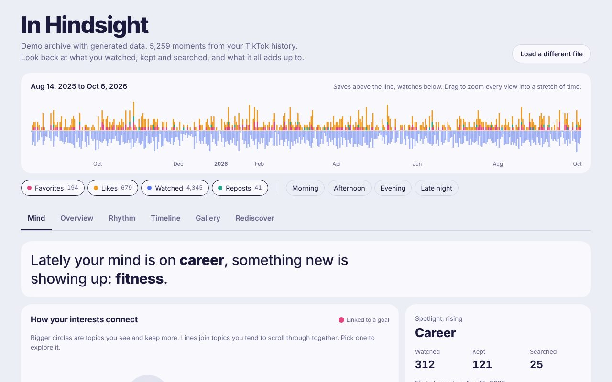
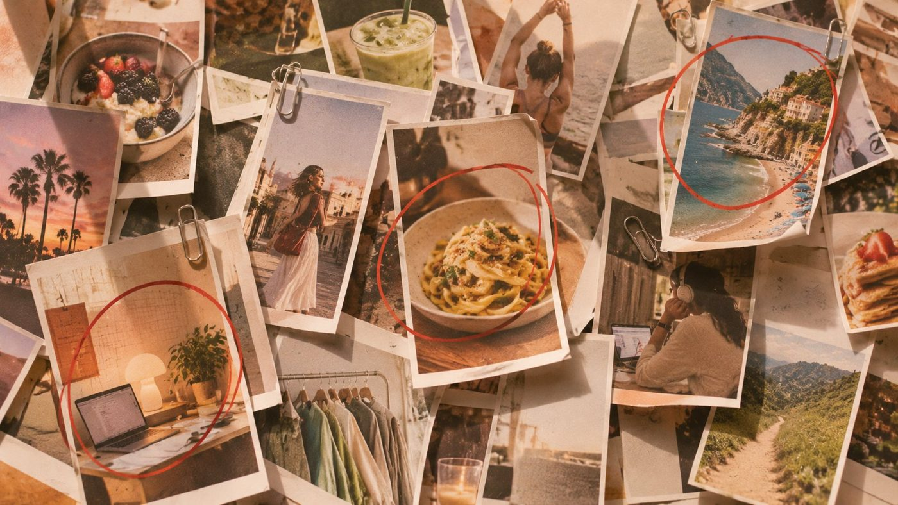
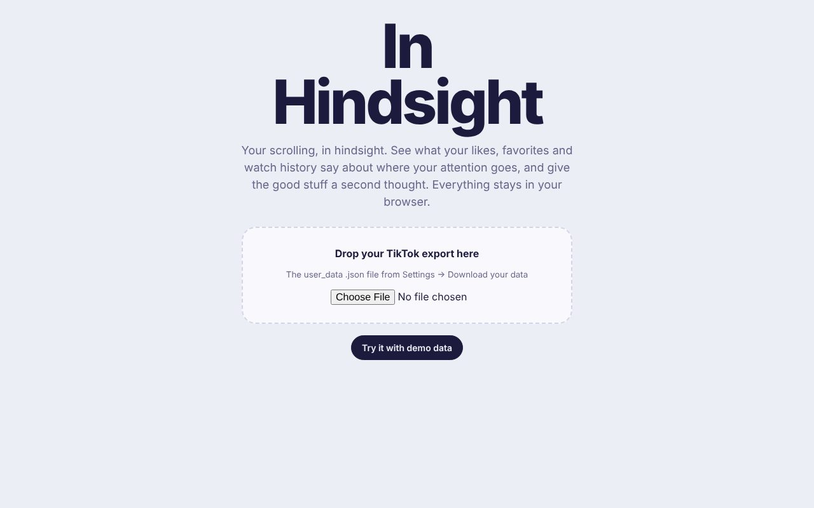
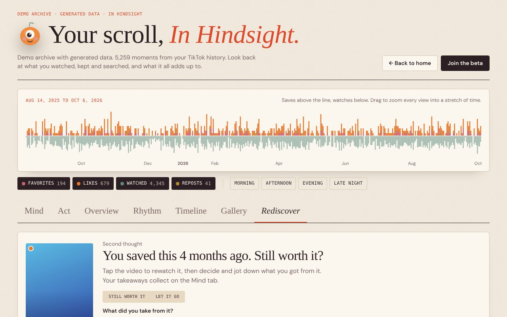
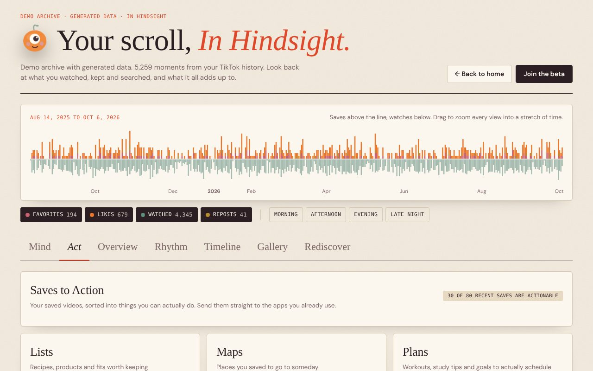

A buddy, not a blocker
Design


Because: 69% already scroll longer than they meant to. They don't need another guilt trip. They need help getting something out of it.
Every save is a promise to come back later, and later rarely comes. In Hindsight turns your TikTok export into a picture of how you scroll, and Peep, a doomscrolling buddy, helps turn saves into plans you actually use.
People save videos to come back to, then never do. 94% of people I surveyed have given up looking for one.
A dashboard of your TikTok history, an Act tab that sends saves to lists, maps and calendars, and Peep, a buddy that keeps you company while you scroll.
Be a buddy, not a blocker. No screen-time guilt, just help getting something out of the time.
Every save is a little promise to come back. Then the feed keeps moving, and the saves pile up in folders nobody opens.
TikTok lets you download all of it, your likes, favorites, reposts and watch history, but the export is a wall of JSON.
Goal: give people their scrolling back in a form they can actually look at, and use.
I surveyed 35 young adults in November 2026 about how they save and scroll.

People don't need more ways to save. They need their saves to turn into something.
Drag through the real versions. Each one fixed what the last got wrong.

One call each for design, product strategy and tech.
Design

Because: 69% already scroll longer than they meant to. They don't need another guilt trip. They need help getting something out of it.
Product strategy


Because: Looking back is nice. Doing something is the reason to come back. The Act tab is what makes it a product and not a novelty.
Tech
Because: People are handing over their entire scrolling history, so trust is the feature. The export is read on your device and never uploaded, and video details load lazily from TikTok's public embeds, four at a time.
Live at inhindsight.net with a working demo and a beta waitlist.
The survey changed the direction more than any feature did.
Keeping everything in the browser shaped the whole architecture, and it's a selling point.
Get Peep in front of the people on the waitlist and see which saves actually turn into plans.
Exploring a physical Peep on a Particle Photon 2 that syncs with your In Hindsight data.